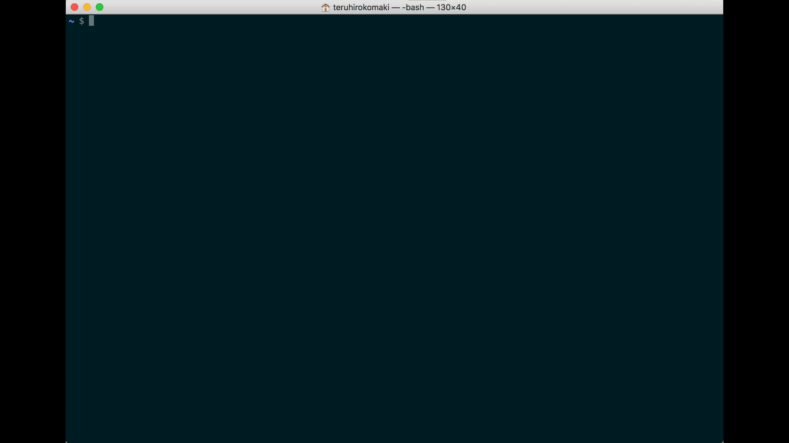
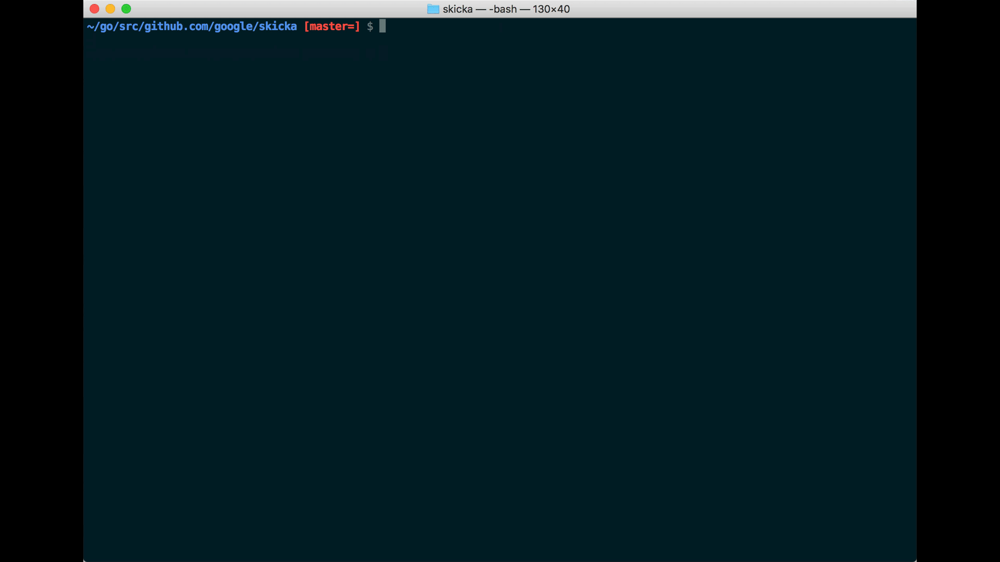
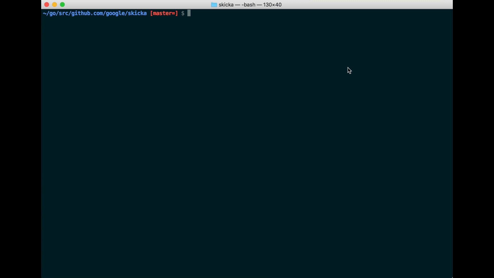

fzfを使ってターミナルでの作業を効率化する
タイトルの通りですが、自分なりにfzfを使ってターミナルでの作業を効率化できたので、メモ。
すごく快適になるので、試してみてほしいです！
fzfを使うと、どのように効率化できるのか？
ターミナル内でのディレクトリの移動が快適にできるようになります。
以下のgifにもある通り、ghqを使うことでリポジトリの移動が快適になります。
どちらかといえば、pecoのほうが人気な気がしますが、Vimとの連携もできるので、Vimを使っている方にもおすすめです。
シンプルにfzfコマンドを実行する
まずは、シンプルにfzfを実行する。
ちなみに、私は以下のデフォルトオプションを設定しています。
export FZF_DEFAULT_OPTS="--height 50% --layout=reverse --border --inline-info --preview 'head -100 {}'"
ghqとfzfを連携する
ghqとfzfを連携して、リポジトリの移動をする。

各種リンク
インストール
GitHubを見るのが良いと思いますが…
一応ね…
macの場合、brewでインストールできます。
brew install fzf
Ubuntuでは、リリースからバイナリをダウンロードして、パスを通して使っています。
まずは、使ってみる
gifにもあったように、fzfを実行してファイルを選択すると、該当のファイル名を受け取れます。
~/go/src/github.com/google/skicka [master=] $ fzf
README.md
GitHubの引用ですが、以下のような感じで利用できます。
フォルダを選択する
find * -type d | fzf

Vimで開く
vim $(fzf)

–heightオプションをつけて実行する
vim $(fzf --height 40%)
–reverseオプションをつけて実行する
vim $(fzf --height 40% --reverse)
デフォルトのオプションを設定する
export FZF_DEFAULT_OPTS='--height 40% --layout=reverse --border'
export FZF_DEFAULT_COMMAND='fd --type f'
Wikiをみる
やりたいことは、Wikiを見れば分かると思います。
ghqとの連携で使っている関数
# fdg - ghq
fdg() {
local selected
selected=$(ghq list | fzf)
if [ "x$selected" != "x" ]; then
cd $(ghq root)/$selected
fi
}
Wikiから引用して、私が使っている関数など
# fh - repeat history
fh() {
eval $( ([ -n "$ZSH_NAME" ] && fc -l 1 || history) | fzf +s --tac | sed 's/ *[0-9]* *//')
}
# fkill - kill process
fkill() {
local pid
pid=$(ps -ef | sed 1d | fzf -m | awk '{print $2}')
if [ "x$pid" != "x" ]
then
echo $pid | xargs kill -${1:-9}
fi
}
# fd - cd to selected directory
fd() {
local dir
dir=$(find ${1:-.} -path '*/\.*' -prune \
-o -type d -print 2> /dev/null | fzf +m) &&
cd "$dir"
}
# fda - including hidden directories
fda() {
local dir
dir=$(find ${1:-.} -type d 2> /dev/null | fzf +m) && cd "$dir"
}
# fshow - git commit browser
fshow() {
git log --graph --color=always \
--format="%C(auto)%h%d %s %C(black)%C(bold)%cr" "$@" |
fzf --ansi --no-sort --reverse --tiebreak=index --bind=ctrl-s:toggle-sort \
--bind "ctrl-m:execute:
(grep -o '[a-f0-9]\{7\}' | head -1 |
xargs -I % sh -c 'git show --color=always % | less -R') << 'FZF-EOF'
{}
FZF-EOF"
}
# tm - create new tmux session, or switch to existing one. Works from within tmux too. (@bag-man)
# `tm` will allow you to select your tmux session via fzf.
# `tm irc` will attach to the irc session (if it exists), else it will create it.
tm() {
[[ -n "$TMUX" ]] && change="switch-client" || change="attach-session"
if [ $1 ]; then
tmux $change -t "$1" 2>/dev/null || (tmux new-session -d -s $1 && tmux $change -t "$1"); return
fi
session=$(tmux list-sessions -F "#{session_name}" 2>/dev/null | fzf --exit-0) && tmux $change -t "$session" || echo "No sessions found."
}
あとがき
pecoもfzfもGo製ってのがいいですね！